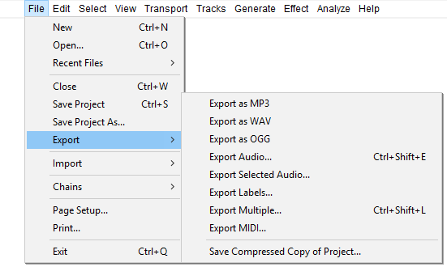

File Menu: Export
Additionally you can export label files or MIDI or save a compressed copy of your project in a set of Ogg Vorbis formatted files.
- Click, or hover, on any menu item in the image to read about that command. Skip the image
- 
Exports to specific audio file formats
If there are multiple tracks in your project, they will be automatically mixed in the exported data. For more information about mixing, see Mix and Render on the Tracks Menu.
| For all types of audio export including Export Selected Audio and Export Multiple, tracks that are muted are not exported. |
Export as MP3
Exports the current Audacity project in compressed MP3 (lossy) audio file format.
Export as WAV
Exports the current Audacity project in uncompressed WAV (lossless) audio file format.
Export as Ogg Vorbis
Exports the current Audacity project in compressed Ogg Vorbis (lossy) audio file format.
Export Audio... Ctrl + Shift + E
Exports the current Audacity project as an audio file format that can be read by other applications. As with the exports to specific audio file formats, if there are multiple tracks in your project, they will be automatically mixed in the exported data. For more information about mixing, see Mix and Render on this page.
You can choose the exported file format and settings from the Export Audio Dialog.
Export Selected Audio...
This is the same as Export Audio above, but it only exports the part of the project that is selected. For example, to save a small piece of a long track as a separate file, just select that audio as described in How do I select audio in one track? before using Export Selected Audio.
Export Labels...
If you have any Label Tracks, this command will export all their labels as a text file. The text in each label appears as one line in the exported file, prefaced by the start time and end time of the label (in seconds). If you have multiple label tracks, the labels in the uppermost label track appear first in the file.
To import the labels into an Audacity project later, use the command.
Export Labels is commonly used in speech transcription or speech recognition research, after which the files can be manipulated in any application that accepts text files. Labels can also be modified after export for use as Cue Sheets for CD burning or as movie subtitles.
Export Multiple... Ctrl + Shift + L
This allows you to do multiple exports from Audacity with one command. Export either multiple files based on the multiple tracks in the project, or based on the labels in a single audio track. A great timesaver for splitting up long recordings into separate CD tracks, or archiving multiple working tracks. See the Tutorial - Copying tapes, LPs or MiniDiscs to CD for an example of how this is used.
Export MIDI...
Export the currently selected Note Track as a MIDI or Allegro file (which is like a MIDI file except that the notes information is stored as plain text). You can choose in the Import / Export Preferences whether to export Allegro files with times and durations represented in seconds (default) or in beats. Some applications that can play MIDI files may not be able to play Allegro files.
Only one Note Track can be exported at a time. The entire Note Track will be exported regardless of any selection made in the track. If the Note Track has been time shifted to start at a point other than zero, empty MIDI bars will be added at the start.
| To export an Allegro file the .gro file extension must be manually added to the end of the exported file name, except on Windows. |
Save Compressed Copy of Project...
Saves a copy of your project in the compressed Ogg Vorbis format, each track being saved as a separate OGG file. When you quit Audacity you may still be prompted about saving changes. Saving changes would save a separate, standard uncompressed project as above, so if you do not want that you can quit Audacity without saving.
The resulting _data folder for the project is about eight times smaller than that created using either "Save Project" command, so this may be useful for sending projects to others. There will be some resulting loss of quality. Note that the quality loss will be increased each time a compressed project is resaved as a compressed project (for example, if you send a compressed project to someone else, and they then edit it and send it back to you as a compressed project).
Most project data will be retained, including labels, gain and pan settings, track positions on the timeline, track order and metadata. Clips will not be retained - spaces between clips will be converted to silence. Volume envelopes present when saving will be rendered, but the actual envelope points will be lost.
Opening a compressed project will be slower than opening a standard project, because the OGG files in the _data folder will be decompressed into Audacity's AU file format in order to work with the data. The AU files will be in a separate folder inside the _data folder. The OGG files will remain in the _data folder after opening the project, but they can be deleted to save disk space. Similarly when sending a saved compressed project to someone, you can delete any folders containing AU files that are inside the _data folder, because all the necessary data is in the AUP file and the OGG file(s).